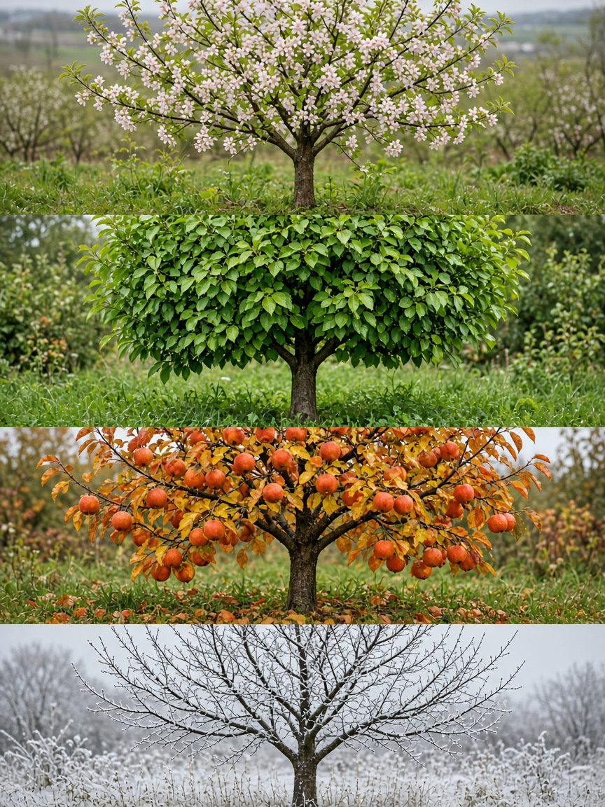

Rootmark
Grow a tree for every chapter of life.
Fruit trees planted on local farms for births, anniversaries, and milestones — with monthly photos, harvest education, and a real carbon story.
How it works
A living gift that keeps growing.
You mark the moment. We plant and care for a fruit tree near you. You watch it grow — and optionally harvest or donate the fruit.
Choose a milestone
Birth, wedding, memorial, graduation — pick a fruit variety and a story to plant with it.
We plant on a partner farm
Your tree lives with growers who already know soil, pruning, and harvest. No backyard stress. No moving panic.
Follow monthly photos
A private web timeline shows blossoms, fruit set, and harvest cues — education baked into every season.
Why Rootmark
Sentiment, harvest, and climate — one root system.
- Honor life without the upkeepFarms host and care for your tree. Visit when you want; we handle the rest.
- Learn the fruit calendarMonthly photos come with notes on bloom, thinning, ripening, and when to pick.
- Keep fruit in the communityTake a harvest share or donate to the farm and neighbors.
- Real trees, real carbonEach planting adds living biomass and soil stewardship through partner orchards.

Local farms
Connected to growers near you.
Rootmark is a farm network, not a nursery shipment. Partner orchards earn hosting fees, gain visitors, and keep fruit circulating locally.
Meet the founding team
Monitoring
Your tree, month by month.
A simple website becomes a living album — farm-uploaded photos that turn care into connection.
